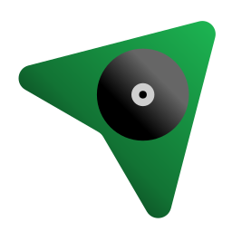

Welcome to NextPeek!
Stop guessing. See what's coming.
NextPeek gives you a clean, always-on window into your live Spotify queue, right on your desktop.
To get started, click the Start button below.
NextPeek gives you a clean, always-on window into your live Spotify queue, right on your desktop.
To get started, click the Start button below.